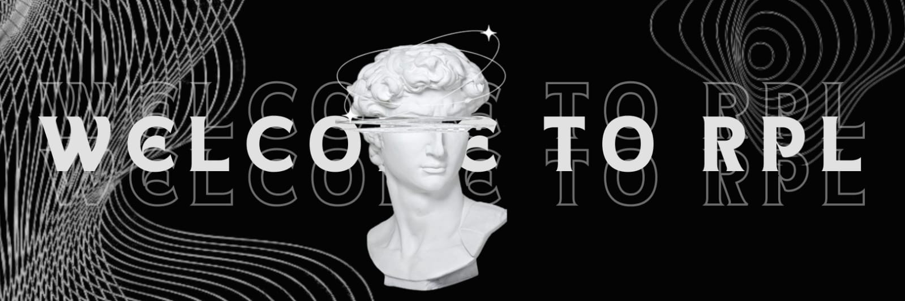
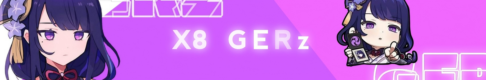
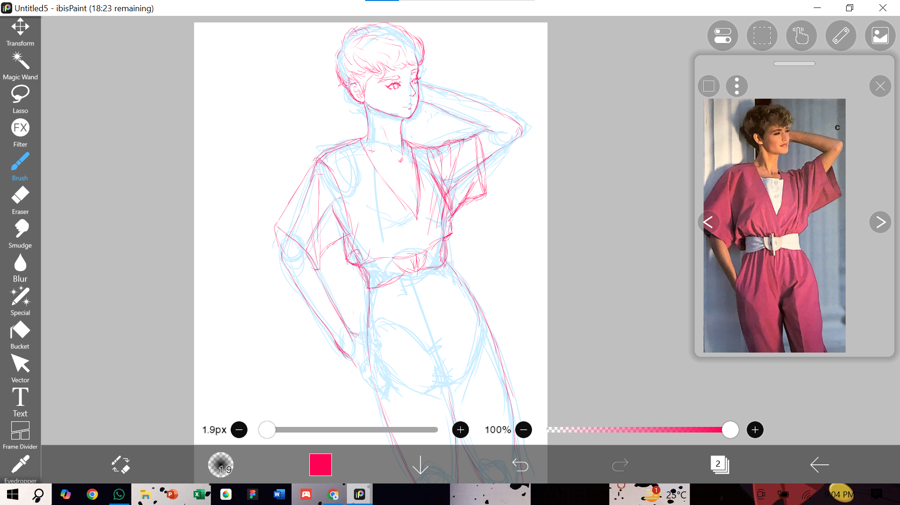
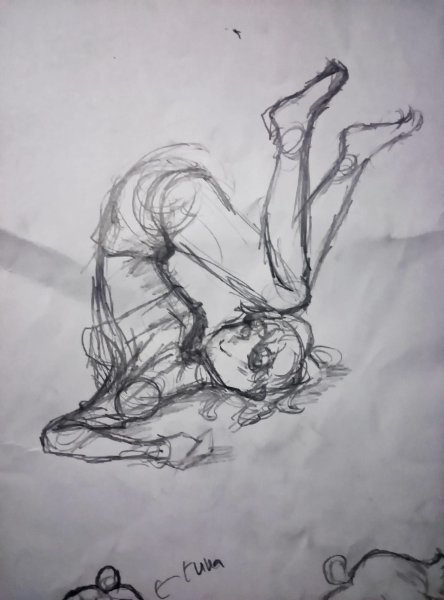
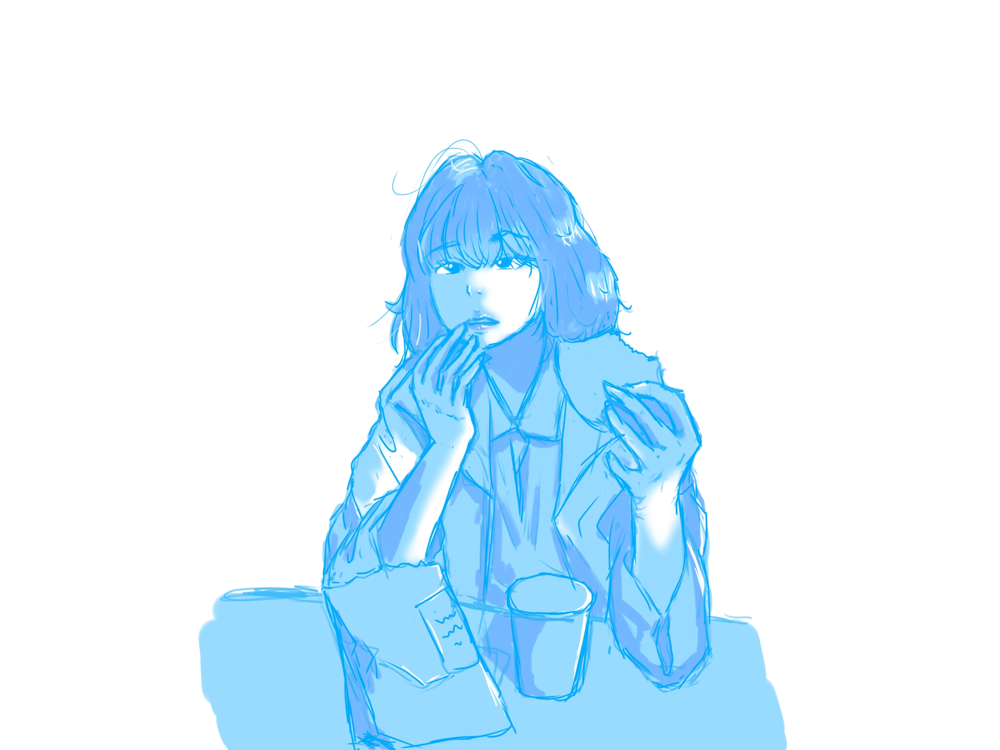
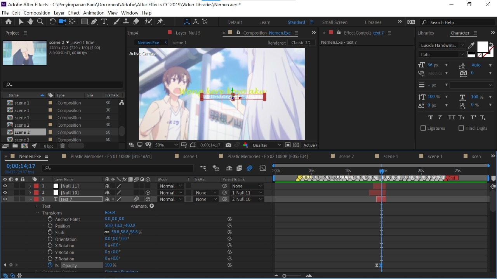

Minat Saya
Saya memiliki ketertarikan dengan multimedia, seperti mengedit video atau foto. Selain itu saya juga tertarik dengan desain diantarnya GFX dan menggambar secara tradisional, ataupun secara digital.
GFX
GFX adalah singkatan dari Graphic Effect(s). Dalam dunia desain grafis, GFX dapat diartikan sebagai: GUI, Ikon, Thumbnail. Desain grafis adalah proses komunikasi visual yang menggunakan elemen-elemen seperti fotografi, ilustrasi, dan tipografi untuk menyampaikan pesan kepada audiens. Dalam desain grafis, seorang desainer akan membuat dan menggabungkan gambar, font, dan foto menjadi tata letak yang menarik.
GFX

Benner


Gambar Tradisional & Digital

Saya suka manggambar setelah menonton anime & beberapa channel Youtube yang membuat cerita bergambar. Saya mulai dengan menggambar dimedia Tradisional seperti kertas, kemudian mulai mencoba berpindah ke media Modern, yaitu media Digital dengan menggunakan software IbisPait X ,& Clip Studio Paint.
Gambar Media Tradisional

Gambar Media Digital

Video Editing

Saya mulai mencoba mengedit video dan foto sejak dari smp, saya tertarik dengan video editing karena saya rasa video yang diedit dapat diupload ke platfrom seperti Youtube & Instagram.
AMV (Anime Music Video)
AMV atau singkatan dari Anime Music Video merupakan sebuah gabungan dari potongan klip dari berbagai jenis anime yang digabungkan menjadi satu yang disesuaikan dengan lantunan musik.